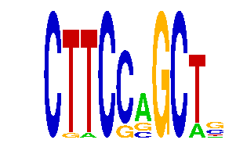

family_5 |
|---|
|  |
| Download PWM |
| Download instances (motifs) |
| Show motif distribution |
Query_ID | Query_Consensus | Subject_Name | Source_DB | Subject_ID | Length | Orientation | Offset | Divergence | Overlap | Subject_Consensus |
|---|---|---|---|---|---|---|---|---|---|---|
| family_5 | CTTCCAGCTS | GGCNRNWCTTYS | JASPAR | PF0118 | 12 | as given | -7 | 0.520 | 5 | GGCGGGACTTCC |
| family_5 | CTTCCAGCTS | EWSR1-FLI1 | JASPAR | MA0149.1 | 18 | reverse-complement | -13 | 0.626 | 5 | GGAAGGAAGGAAGGAAGG |
Sequence | Start_position (from start) | Start_position (from end) | Average conservation | Best conservation score | Instance_with_best_CS | Best_Z-score | Instance_with_best_ZS | Strand |
|---|---|---|---|---|---|---|---|---|
| chr12:104593596-104594596 | 407 | 417 | 0.9388 | 0.994 | CTTCSAGCT. | 13.908842 | CTTCCRGCT. | 1 |
| chr8:90933165-90934165 | 906 | 916 | 0.5701 | 0.985 | CKTCSAGCT. | 13.908842 | CKTCSAGCT. | 1 |
| chr5:122552226-122553226 | 103 | 113 | 0.7943 | 0.899 | CTTCSMGCT. | 12.211439 | CTTCSMGCT. | -1 |
| chr7:149846298-149847298 | 305 | 315 | 0.0064 | 0.014 | CTTCSMGCT. | 12.211439 | CTTCSMGCT. | 1 |
| chr8:46972744-46974590 | 317 | 327 | 0.0048 | 0.018 | CTTCSRGCT. | 17.31205 | CTTCSRGCT. | 1 |
| chr4:129590772-129591772 | 457 | 467 | NA | NA | CTTCCRGCW. | 12.672812 | CTTCCAGCWS | 1 |
| chr12:75048303-75049303 | 204 | 214 | 0.0189 | 0.028 | CKTCSAGCT. | 12.915479 | CTTCCRGCW. | 1 |
| chr5:122552226-122553226 | 959 | 969 | 0.0007 | 0.002 | CTTCCRGCW. | 12.672812 | CTTCCAGCWS | 1 |
| chr14:55602242-55603242 | 227 | 237 | 1 | 1 | CTTCSAGCK. | 17.31205 | CTTCSRGCT. | 1 |
| chr7:16897218-16898218 | 343 | 353 | 0.9941 | 0.999 | CTTCSMGCT. | 12.211439 | CTTCSMGCT. | 1 |
| chr15:103213773-103214773 | 358 | 368 | 0.0002 | 0.001 | CTTCCRGCT. | 13.908842 | CKTCSAGCT. | 1 |
| chr17:71371554-71372554 | 939 | 949 | 0.1272 | 0.394 | CTTCSRGCT. | 12.734484 | CTTCCRGCK. | -1 |
| chr1:191747532-191748532 | 963 | 973 | 0.0193 | 0.053 | CKTCSAGCT. | 12.211439 | CTTCSMGCT. | 1 |
| chr8:90933165-90934165 | 846 | 856 | 0.2714 | 0.891 | CTWCSAGCT. | 12.734484 | CTWCSAGCT. | -1 |
| chr2:35115003-35116003 | 351 | 361 | 0.2143 | 0.489 | CTTCSAGCT. | 13.908842 | CTTCCRGCT. | 1 |
| chr17:26984844-26985844 | 532 | 542 | 0.1278 | 0.221 | CTTCSMGCT. | 12.211439 | CTTCSMGCT. | -1 |
| chr8:23618125-23619125 | 156 | 166 | 0.0012 | 0.003 | CTTCCRGCW. | 12.672812 | CTTCCAGCWS | 1 |
| chr7:119885169-119886169 | 560 | 570 | 0.0379 | 0.187 | CTTCSMGCT. | 13.908842 | CKTCSAGCT. | 1 |
| chr6:24547513-24548513 | 475 | 485 | 0.9996 | 1 | CKTCSAGCT. | 13.908842 | CTTCCRGCT. | -1 |
| chr2:77886805-77887805 | 390 | 400 | 0 | 0 | CTTCSRGCT. | 17.31205 | CTTCSRGCT. | 1 |
| chr15:76851674-76852674 | 527 | 537 | 0.5047 | 0.841 | CKTCSAGCT. | 12.915479 | CTTCCRGCW. | 1 |
| chr4:129472154-129473154 | 335 | 345 | 0.2264 | 0.381 | CTTCSMGCT. | 12.211439 | CTTCSMGCT. | -1 |
| chr9:77199918-77200918 | 25 | 35 | 0.0008 | 0.006 | CKTCSAGCT. | 12.734484 | CTTCCRGCK. | 1 |
| chr11:21468789-21470752 | 716 | 726 | 0.0148 | 0.032 | CTTCSRGCT. | 13.908842 | CTTCCRGCT. | 1 |
| chr14:55584204-55585204 | 466 | 476 | 0.0036 | 0.008 | CKTCSAGCT. | 13.908842 | CKTCSAGCT. | -1 |
| chr2:84474956-84475956 | 484 | 494 | 0.5593 | 0.977 | CTWCSAGCT. | 12.734484 | CTWCSAGCT. | 1 |
| chr11:21468789-21470752 | 78 | 88 | 0.0035 | 0.018 | CTTCSAGCT. | 12.672758 | CTTCSAGCK. | -1 |
| chr10:53062926-53063926 | 988 | 998 | 0.0812 | 0.778 | CTTCCRGCT. | 12.734484 | CTTCCRGCK. | 1 |
| chr1:72873097-72874097 | 216 | 226 | 0.0045 | 0.012 | CKTCSAGCT. | 12.672812 | CTTCCAGCWS | -1 |
| chr5:100643632-100644632 | 927 | 937 | NA | NA | CTTCSMGCT. | 12.211439 | CTTCSMGCT. | 1 |
| chr10:90703960-90704960 | 232 | 242 | 0.2984 | 0.33 | CTTCCRGCW. | 12.672812 | CTTCCAGCWS | 1 |
| chr15:89255646-89256646 | 45 | 55 | 0.9998 | 1 | CTTCCRGCTK | 12.734484 | CTTCCRGCK. | -1 |
| chr9:77232994-77233994 | 510 | 520 | 0.0045 | 0.008 | CTTCSAGCT. | 12.211439 | CTTCSMGCT. | 1 |